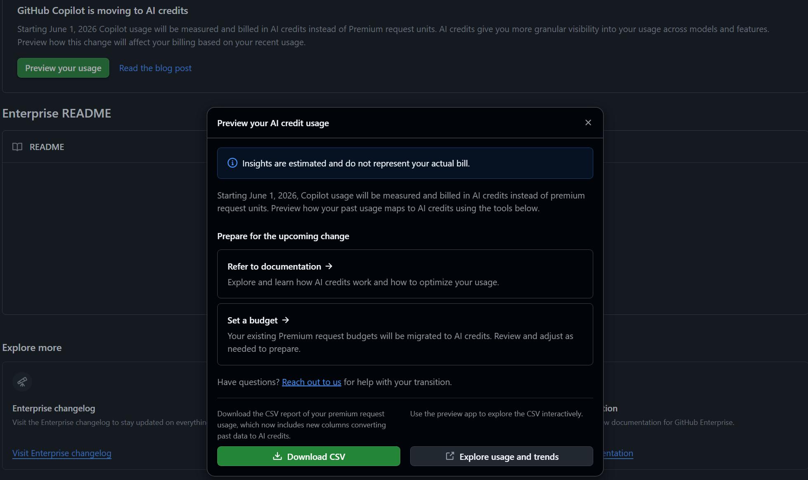
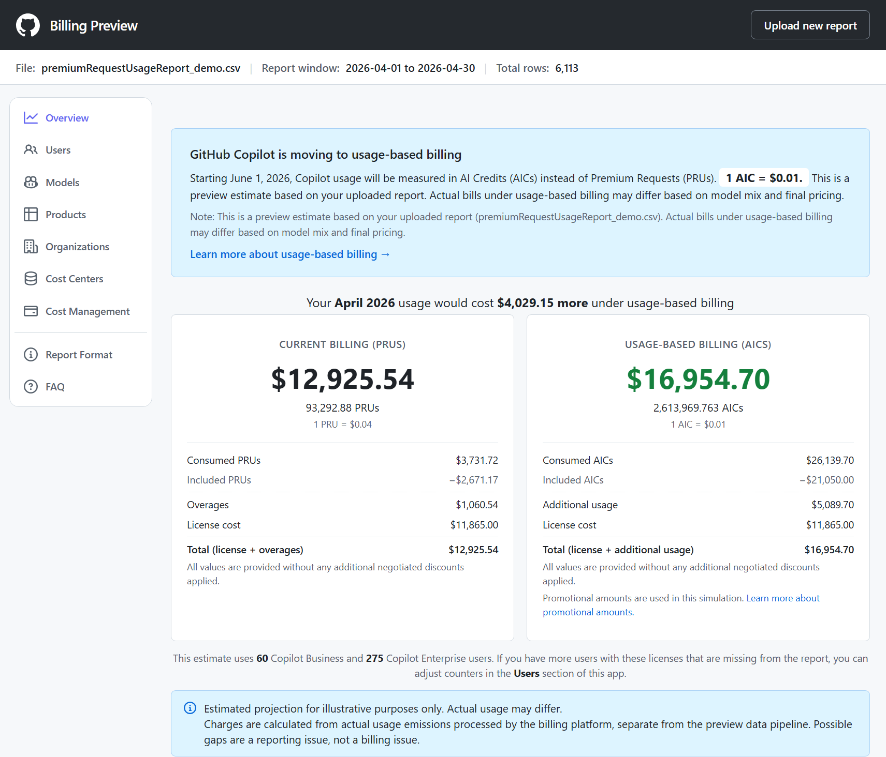
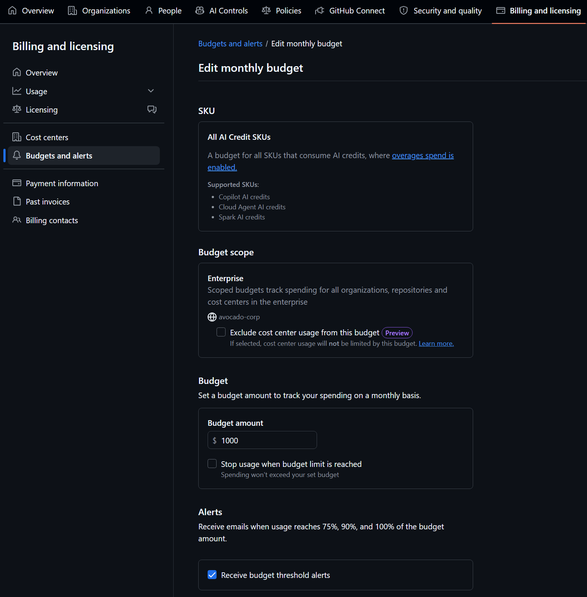
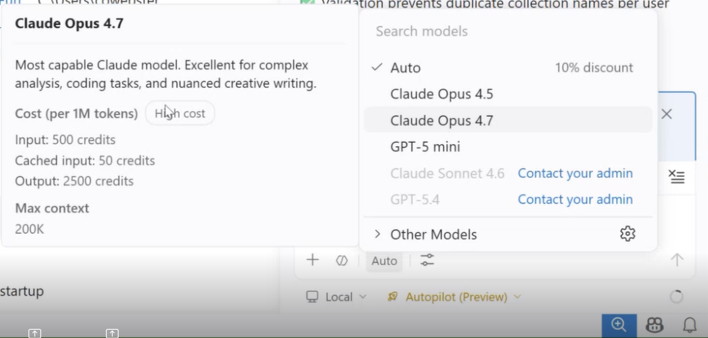
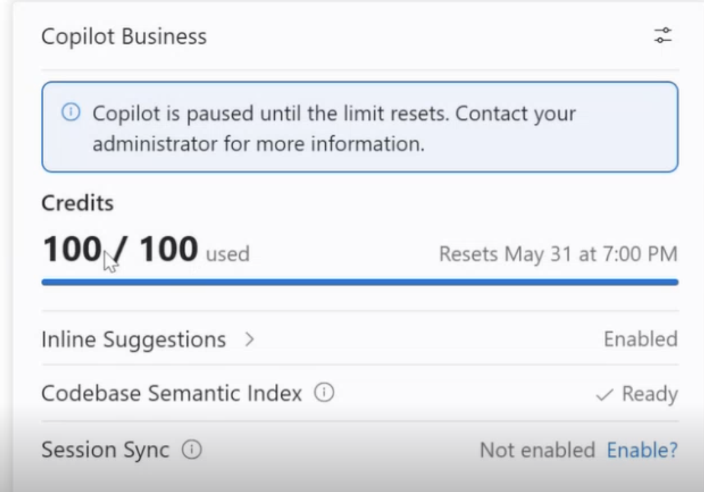

How to use this guide
Steps are grouped by when they should happen. Each step is collapsible and tagged with who should perform it. Check the box on each step as you complete it — your progress is saved locally in this browser.
Now
Preparation work to complete before the new billing model goes into effect.
-
1 Review forecasted impact of billing changes
Use the billing preview tool to understand how the new model will affect your enterprise based on recent usage.
- Navigate to your GitHub Enterprise and click the "Preview your usage" banner. (View detailed steps)
- Click Download CSV.
- The report will be emailed to you within a few minutes. Download it when it arrives.
- Navigate to copilot-billing-preview.github.com.
- Upload the CSV.
- Confirm the correct number of Copilot licenses on the Users tab. Users with no activity during the report period will not be included automatically. You can manually adjust the numbers if needed by clicking "Edit seat counts".
- Review the forecast on the Overview tab to understand the overall impact on your enterprise. You can also view data by user, model, product, organization, or cost center.
Note: The pricing shown is based off of the limited promotional period for June, July, and August.Note: The forecast is based on list prices. Azure consumption discounts or other special pricing are not reflected.Treat the preview as a directional estimate. The April preview data has a few known gaps. It’s a reliable signal for cost shape, top consumers, and model mix — not a recalculated bill.- 0× model usage from April 1–24 is missing. Across paid plans this is roughly 2% of activity at scale, so it won’t materially shift most totals. If your team relies primarily on 0× models, look at data from April 24 onwards to inform your estimates.
- Duplicate entries may appear for April 24–30 due to a data backfill gap.
- Some code review entries are missing AI credit estimations. Copilot code reviews charged directly to organizations via automation, or initiated by a user without a Copilot license, will reflect 0 AI credits due to a known data issue.
Reference: Prepare for usage-based billing

Download the usage report from your enterprise. 
Forecast overview in the Copilot Billing Preview tool. -
2 Review and adjust budgets
Budgets provide a critical guardrail for controlling your AI credit spending. By setting budgets at the enterprise and cost center levels, you can define the maximum amount of credits that can be charged to your organization, helping prevent unexpected costs as your teams adopt GitHub Copilot.
Existing enterprise-level budgets for premium requests will automatically convert to AI credits on June 1st. Review them at both the enterprise and cost center level to confirm they still reflect the limits you want. You can adjust existing budgets or add new ones to control your overall spend based off the estimates from the billing preview tool.
View your current budgets
- Sign in to GitHub and click your profile photo, then click Your enterprises.
- Select your enterprise, then click Settings → Billing & licensing.
- In the left sidebar, click Budgets and alerts.
- Review the list of existing enterprise budgets. To inspect a cost center budget, switch to the Cost centers view and select a cost center.
Add a new budget
- Click New budget, choose the scope (enterprise, cost center, or repository) and set the limit.
- Choose whether the budget is a hard or soft limit by toggling "Stop usage when budget limit is reached":
- Hard limit (toggle on): Usage is blocked once the budget is reached, preventing any additional charges.
- Soft limit (toggle off): Usage continues past the limit and you are alerted, but charges keep accruing.
- Setup alerts so that you are notified well before a budget is exhausted.
Adjust an existing budget
- In the list of budgets, click next to the budget you want to change, and click ✎ Edit or 🗑 Delete.
- Update the budget or alert recipients as needed, then save your changes.
Note: All budget amounts are evaluated against list-price usage, before any Azure consumption discounts or other special pricing are applied.References:
- Set up budgets — GitHub Docs
- Managing AI credits — Well-Architected for GitHub
- Register for an upcoming budgetting webinar

Edit an existing budget from the Budgets and alerts page. -
3 Plan for user-level budgets (ULBs)
ULBs control how much an individual user can consume in AI credits. This is different from budgets, which control how much can be charged to the enterprise or cost center. ULBs help prevent any single user from consuming more than their fair share and help manage costs at the user level.
- Decide on a universal default ULB for your enterprise. It applies to all users without a custom ULB.
- Decide whether to set custom ULBs for specific users (e.g., heavy users, or users who should have a lower limit).
Warning: A ULB is not a guarantee of usage. A cost center or enterprise budget can block charges even if a user is within their ULB.These limits cannot be set until the billing changes go into effect on June 1st, but planning now means you can apply them as soon as they are available.
Best practices
- Make sure you set a universal ULB to prevent any single user from consuming more than their fair share.
- Set ULBs higher than your included AI credits per license. Consider setting the base ULB to 125–150% of your included credits so you can effectively use the benefits of pooled AI credits.
- Consider how ULBs interact with enterprise and cost center budgets to avoid unexpected charges.
References:
-
4 Communicate changes to users
Communicate the upcoming changes to your users via email, internal channels, or team meetings. Cover the new billing model, how it affects them, and any actions they need to take (such as adjusting usage or understanding ULBs). Clear communication reduces confusion and friction during the transition.
Coach users on optimizing their usage
Help users get the most out of their AI credits by sharing a few simple habits:
- Choose the right model for the job. Use lighter, lower-cost models for everyday tasks like quick edits, simple completions, or boilerplate, and reserve premium models for genuinely complex reasoning, large refactors, or hard debugging.
- Provide as little context as possible, but as much as required. Attach only the files, selections, or references the model actually needs. Oversharing context inflates credit usage and can dilute the response quality.
Consider hosting training sessions, sharing best practices guides, or creating internal documentation to help users understand how to optimize their usage under the new billing model. GitHub will also be providing educational resources and webinars on this topic attendees can register for at: GitHub Events.
Tip: Look at historic usage of individual users and proactively notify anyone consuming above their planned ULB so they can adjust usage or request a higher ULB.References:
-
5 Update developer tools
Developers should make sure they are on the latest versions of Visual Studio Code, the GitHub Copilot extension, the Copilot CLI, JetBrains plugins, and any other Copilot-enabled tooling so they have the best experience with the new billing model.

Pick a model from the Copilot model picker in VS Code. 
View remaining AI credits directly in VS Code.
June 1
Activities to perform when the new billing model takes effect.
-
6 Set user-level budgets (ULBs)
Implement the ULBs you planned in step 3:
- Set the universal default ULB for all users.
- Set custom ULBs for specific users as needed.
Do this on day 1. ULBs only apply to future consumption — any credits a user spends before their ULB is in place are not retroactively capped. Apply your default ULB (and any custom ULBs) as soon as the controls become available, before users start consuming on the new model.Tip: APIs will be available to script setting and updating per-user ULBs, which makes it practical to apply custom limits to large numbers of users without clicking through the UI for each one.
Ongoing
Activities to perform continuously throughout each billing cycle.
-
7 Monitor enterprise usage and adjust as needed
Continuously monitor usage and costs using the tools in your enterprise billing settings. If users consistently hit their ULBs, or if overall costs trend higher than expected, adjust ULBs or budgets accordingly.
Proactively warn users, cost centers, or the entire enterprise if they are tracking to exceed budgets or ULBs before the end of the month.
-
8 Monitor your personal usage throughout the month
Keep an eye on your own AI credit consumption so you don't unexpectedly hit your user-level budget partway through the month.
- Review your usage in your personal GitHub settings on a regular cadence (e.g., weekly).
- Be aware of which models and features consume more credits, and pace your usage accordingly.
- If you are trending toward exceeding your ULB before month-end, adjust your usage or request a higher ULB from your enterprise owner or billing manager.
Tip: Credits reset at the start of each billing cycle. If you're close to your limit late in the month, plan higher-cost work for the following cycle when feasible.
September 1
End of the promotional AI credit period — revisit your plan.
-
9 Re-evaluate budgets and ULBs
On September 1, the additional promotional AI credits expire. Without adjustments, users may start reaching limits before the end of the month.
Review whether you need to:
- Adjust enterprise or cost center budgets.
- Adjust default or custom ULBs.
- Prepare users for the change in available credits.